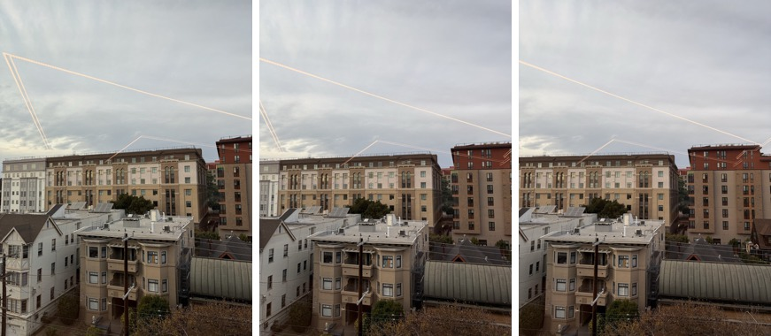
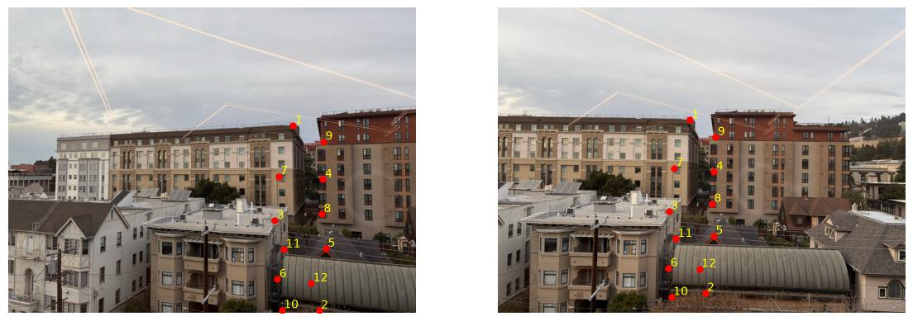
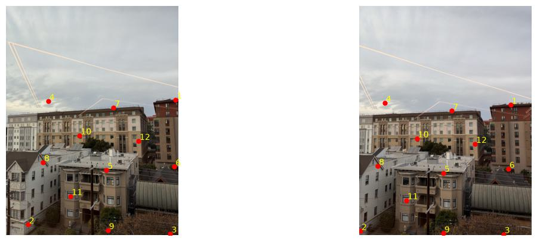
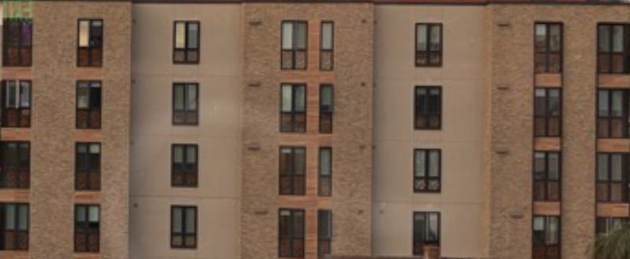
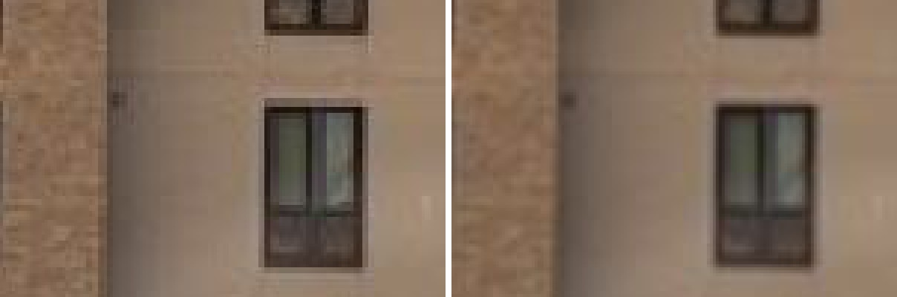
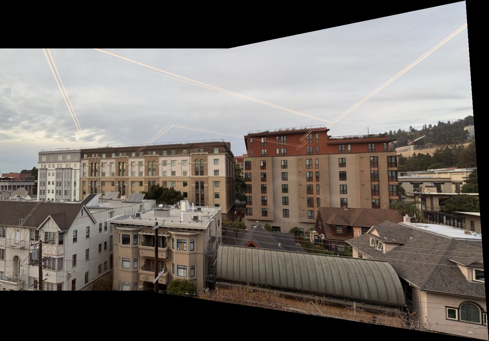

Image Warping and Mosaicing
Overview
In this part, I took photos from one spot, worked out the homography between them, and used it to warp the photos into a single image. I wrote the homography solver, both warps (nearest neighbor and bilinear), and the blending myself. I used numpy for the linear algebra and scipy only for the distance transform and Gaussian blur. I did not use any of the built-in homography or warping functions.
Shooting the pictures
I shot everything from one window, turning the phone without moving it, so the photos are related by a homography. The first set is two photos with about 80% overlap. The second set is a sweep of seven photos, which I split into three photos and all seven. I also tried an earlier pair (IMG_0091 and IMG_0092) that overlapped by only about a third, and it did not work well. I describe that at the end.



The sweep photos were shot in portrait and came off the phone sideways, so I rotated them upright before doing anything else.
Recovering homographies
A homography maps a point (x, y) to (x′, y′) with p′ = Hp, where H is 3×3 and its last entry is set to 1. Writing out x′ = (h1x + h2y + h3) / (h7x + h8y + 1) and multiplying through by the denominator gives two linear equations in the eight unknowns for each correspondence:
[ 0 0 0 x y 1 −xy′ −yy′ ] h = y′
I stacked these into a 2n×8 system A h = b and solved it with np.linalg.lstsq, so with more than four points it is a least-squares fit. computeH(im1_pts, im2_pts) returns the H that sends points in image 1 to image 2. As a check, four exact correspondences recovered a known H to about 1e-12, and 12 noisy ones (0.3 px) gave a close fit.
Correspondences. I did not click the points by hand. I matched SIFT features between each pair, ran RANSAC with my own computeH to throw out bad matches, and then kept the 12 inliers that were most spread out over the overlap. That gives 24 equations. I checked the points on the images by eye, and each numbered point lands on the same feature in both photos.


For set 1, the first four correspondences (from image 2 to image 1) give these rows of the system, with the rest of the 24 rows stacked below:
[ 470 276 1 0 0 0 -328060 -192648 ] [h1..h8]ᵀ = 698 [ 0 0 0 470 276 1 -135830 -79764 ] = 289 [ 508 701 1 0 0 0 -386588 -533461 ] = 761 [ 0 0 0 508 701 1 -377952 -521544 ] = 744 ...
The recovered homography that maps image 2 into image 1 is:
H = [[ 0.60707 0.02164 273.888 ]
[ -0.17828 0.83767 87.060 ]
[ -0.00039 -0.00002 1 ]]
The large translation (274 px) matches the overlap, and the small bottom-row entries show that the second photo is turned a bit relative to the first.
Warping the images and rectification
Both warps use inverse warping. I push the four corners of the image through H to find the size of the output, then for each output pixel I apply H-1 to find where it came from in the source. I treat (0, 0) as the center of the first pixel. A pixel is marked invalid (alpha = 0) if it maps outside the source.
- Nearest neighbor rounds the source coordinate to the closest pixel and copies it.
- Bilinear takes the four surrounding pixels and weights them by how close the source point is to each.
To test the warp, I rectified two walls that I know are planar and rectangular. I clicked the four corners from a gridded crop and mapped them to a rectangle. I do not know the real size of either wall, so I picked the rectangle's width and height by eye. The red lines in the first column show the chosen corners.



In both results, the window rows are level and the columns are vertical, which were slanted in the originals. The brown building shows this well: the string courses between floors, which ran at a slight angle, are now horizontal lines.
Nearest neighbor vs. bilinear
The figures below are 4× zooms of the same region of the rectified brown facade (left: nearest neighbor, right: bilinear), then of the brick facade.


| Image | Nearest neighbor | Bilinear |
|---|---|---|
| Brown facade | 0.023 s | 0.049 s |
| Brick facade | 0.018 s | 0.052 s |
Nearest neighbor is about two to three times faster, since it does one lookup per pixel instead of four plus the weighting. The cost is jagged edges: window frames and the lines between floors become stair-steps, because each output pixel snaps to a whole source pixel. Bilinear edges are smooth, but it blurs the image slightly, because it averages neighbors. Both were fast on images this small, so I used bilinear for everything else.
Blending the images into a mosaic
Procedure. I chose one photo as the reference and chained the pairwise homographies to get a matrix Hi from every photo to the reference. I then found the bounding box of all the warped photos, made one canvas that fits them, and warped every photo onto it with bilinear interpolation.
To avoid a visible seam, I used a weight for every photo. It is the distance transform of the photo's border, so it is 0 at the edge and largest at the center, and I warp it along with the photo. At every pixel, I divide each weight by the sum of the weights. I tried two blends:
- Feathering: a weighted average of the photos at every pixel.
- Two-band: I blurred each photo, averaged the blurred versions with the feathering weights, and took the fine detail from whichever photo had the largest weight at that pixel. The smooth parts blend gradually, and the fine detail is never averaged between two slightly misaligned copies, so it should not ghost.
Mosaic 1: two photos

This is the best result. The overlap is large, so the warp is gentle, and the red building, the green roof, and the brown building all line up across the join. The airplane trails break at the seam because the planes moved between photos, so no blend can fix that.
Mosaic 2: three photos

The middle photo is the reference, so the outer two are warped a little and the canvas bends at the edges. I could not find a visible seam between the photos, apart from the airplane trails.
Mosaic 3: seven photos

For the whole sweep, I chained six homographies. A small error in each pair can add up toward the ends of the chain, but the buildings still line up when I look at the result. The top and bottom edges of the canvas curve, which is the usual cost of warping a wide sweep onto a plane.
Feathering vs. two-band

I could not see a clear difference between them on these photos, since the alignment is already good and the overlap region has little fine detail that disagrees. I kept two-band as the main result because it cannot ghost when alignment is slightly off.
An attempt that did not work
My first photo pair, IMG_0091 and IMG_0092, overlapped by only a third and was turned by a large angle. The correspondences were fine (all 12 implied the same shift of about 650 px), but the homography stretched the far edge of the second photo about five times, and the mosaic came out as a very wide wedge. This is because a planar mosaic cannot represent a wide rotation. I ended up reshooting with more overlap.
Code
See code/ in the submission: main.py (reproduces every figure on this page), mosaic_lib.py (homography, both warps, blending), pick_points.py, test_synthetic.py, and README.txt.
What I learned
The most important thing I learned was how much the shape of the mosaic depends on how I shot the photos. The homography itself was just a small least-squares problem, and it recovered the right answer whenever the overlap was large. When the photos were far apart, the same correct math gave a stretched, unusable result. I also learned that the weights matter more than the blend: once every photo fades out near its own border, the seam almost disappears.